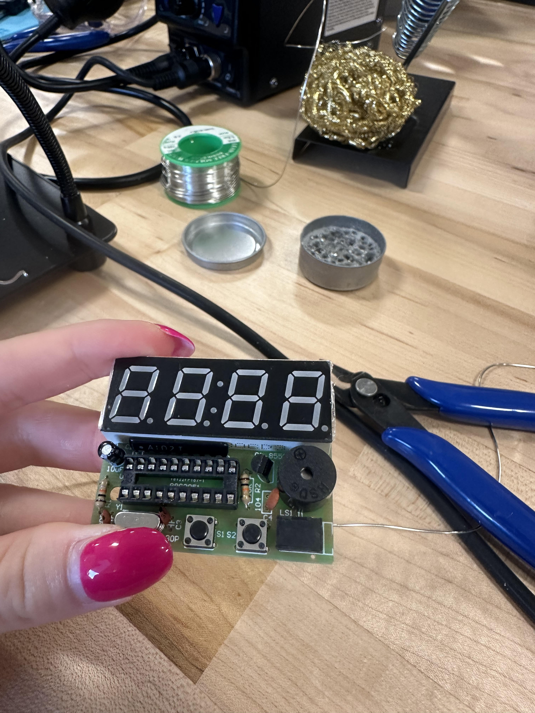
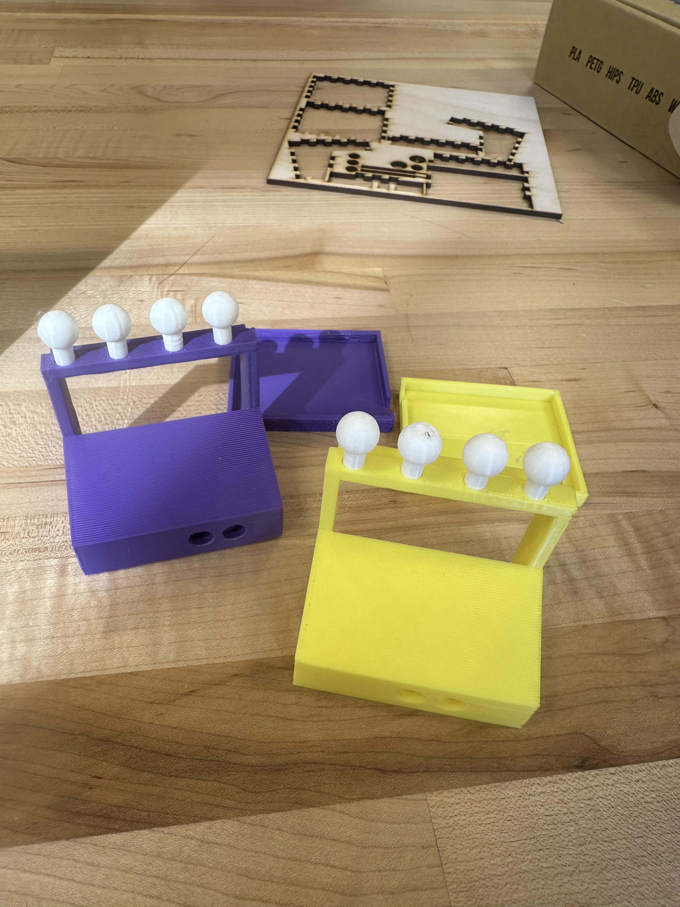

When we first started Project 3, I was really nervous, as I had never considered myself good at hands-on tasks and having a good engineering vision. However, there is a Bulgarian saying- “When adversity knocks on your door, anything is possible.” In the soldering process, I first had trouble melting the solder in the right amount, as I was applying too much of it on the plate. However, after several unsuccessful attempts, I started getting better at melting the right amount of solder, such that it looked like a pyramid from the sides. After soldering all the parts from the electronic kit, I tested my alarm clock on my laptop, and it didn’t work immediately. I saw too much solder on two places of my plate, which might have created some joints. I fixed them and tried again, but it was still not working. Professor Krones helped me by giving me a new USB cable to try, and it turned out that this was the problem. Everything was working with the new USB cable, and Asa and I were ready to work together on the next step- designing a 3D-printed enclosure for the alarm clock. The measurements of our electronic alarm clocks were almost the same- 45 and 55 mm.

3D Print
Next, we worked on our idea for the enclosure. We created a sketch that visualized the alarm clock box- it was steeper from the front, and it had two holes at the front for the alarm clock buttons and one on the side for the USB cable. The back of the box was going to be a detachable part so that we could insert the electronics kit from there. There was also an inside part with two half-holes, where we were going to attach two oblong cylindrical parts with springs so that the person using the alarm clock could press the buttons from the front, and these two parts would touch the buttons on the electronics kit, thus activating the clock.
We started using Fusion together, as the collaboration function on the software looked as follows- we could work together on the same file, but we couldn’t save the changes simultaneously, so we took turns saving the newest changes. We implemented the sketch and extrude functions on Fusion to create the box, using different features from the Solid-Mody and Solid-Create menus, such as the hole function for making the holes. We had two parameters: width set to 55 mm and height set to 45 mm. We also worked on designing four planets on the top that had to fit perfectly in the spots we created with extrude.
When printing the model from PrusaSlicer, we got a warning that we should add organic support almost everywhere, including underneath the steeper wall, so that it doesn’t fall. We put the two oblong cylindrical parts at a greater distance from each other, as we also got a warning that they were too close together. After that, we started printing!
After getting our first 3D print, we noticed that there were a couple of minor imperfections, even though the box looked fabulous. We modified some of the measurements, specifically for the holes, so that they could fit the electronic kit perfectly, and also, the planets and the two oblong parts were a bit thin. After correcting all that, we had our second print, which looked perfect!

Laser Cut
Next, we worked on the laser cut, which was a bit of a challenge. We brainstormed about different ideas and whether we should make our lives easier or work with the same model again. We decided to keep our lives interesting and work on the same design with the minor modification that we would not have the planets on the top. We started thinking about the different components we could divide our box into, and we ended up with 16 separate parts. We started thinking about how we wanted to combine the different parts, and we liked the puzzle-type design. We accounted for the thickness of the material, 3 mm, and we ensured that all the outer pieces were distributed evenly so that they would fit together in the end.
Saving each part as DXF was a bit of a challenge, as we had 16 parts, but we saved all of them in a zip folder and sent them to Penny for laser cutting. To our greatest surprise, everything looked perfect except for one minor detail! The pieces fit perfectly together, and we glued them together. The hole on the side for the USB cable was missing initially, so we needed to refine our laser cut, but then, after making the hole, everything looked fabulous. We tried turning the electronic kit on with all the 3D and laser-cut enclosures, and it worked with all of them. We are proud and happy to say that we have now designed beautiful and convenient alarm clocks on our own!